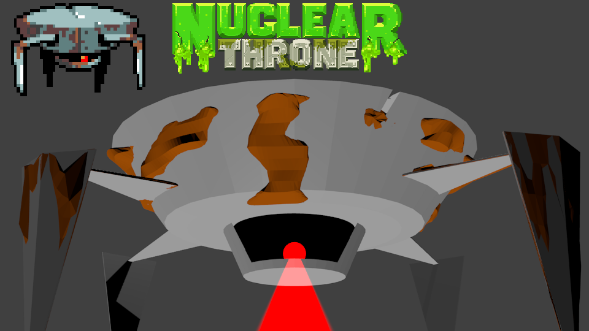

Week 1
This week I mostly focused on 3D modeling using Blender. I made a Bullet Kin from Enter The Gungeon, a Snow Tank and the Nuclear Throne from Nuclear Throne, and The Mighty Octostomp from Splatoon. The Bullet Kin, the Octostomp, and the Snow Tank took about an hour each, and the Nuclear Throne took 2 days.
We went to the Matrix, where I tried VR for the first time.

I made last week's guessing game better by making a bot that plays it for you. It got a high score of 1 342 177 280 before crashing the game.